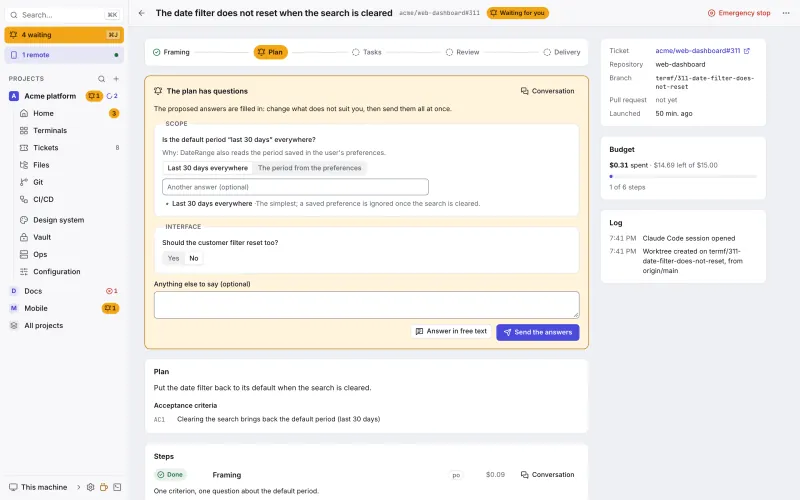
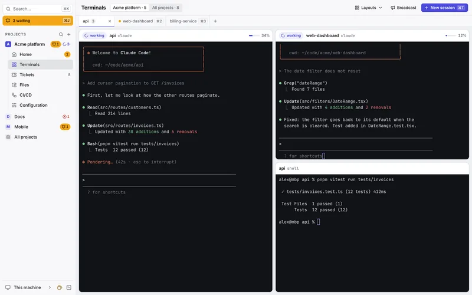
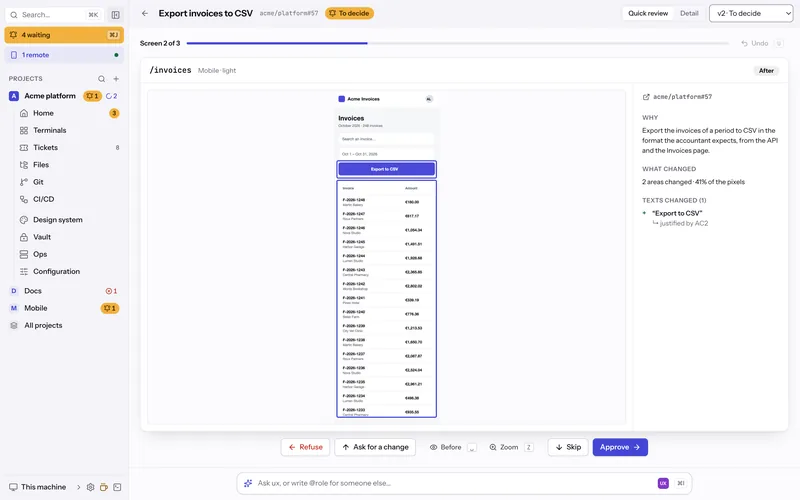
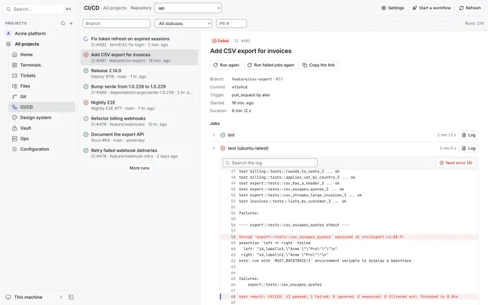
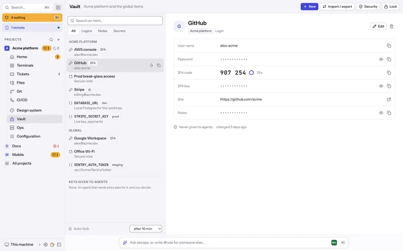
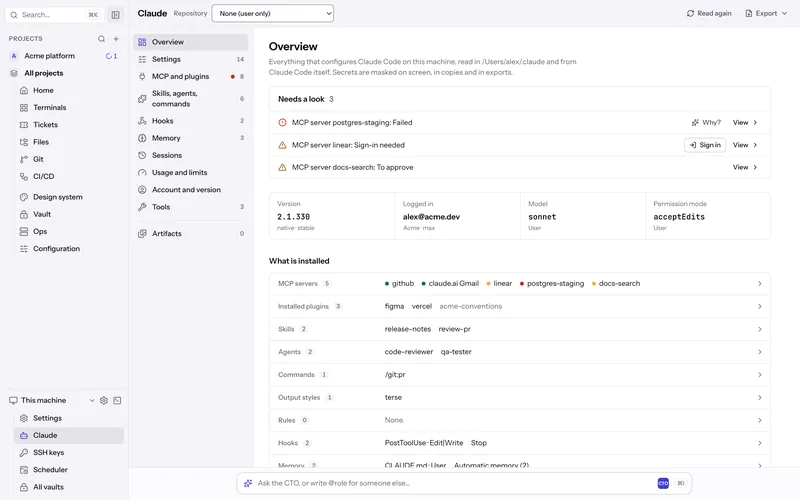

Talk to the CTO.
A team of Claude Code agents ships it.
TermF is a free desktop app for developers who use Claude Code. Describe a ticket; the CTO sizes a team to it, the agents work in parallel, each in its own worktree, and you approve the pull request.
Free and open source (MIT). No account, no telemetry: it runs on your machine. Needs Claude Code. Early version, not signed by Apple or Microsoft yet.

What it does best
Six highlights, each a real screen of the app. Everything else, from SSH keys to the scheduler, is in the docs.






29 agents. The CTO picks who plays.
Each agent is a Claude Code session with one job, its own model and its own permissions. The CTO sizes the team to the ticket: a small fix gets one developer and a short review, the whole lineup plays only on large or sensitive work.
An example. Every agent is a link to its card.
On the bench
EXProject expertPMProduct managerPOProduct ownerUXUX designerARArchitectRESResearcherCMPCompetitive analystREVReverse engineerLETech leadFRFront-end developerBABack-end developerDEDevOps engineerSEOSEO engineerQAQA engineerRECode reviewerSECSecurity reviewerINMerge integratorBRBrand designerCOUX writerMOMotion designerDBADatabase engineerDOCTechnical writerINTIntegration engineerSRESite reliability engineerA11YAccessibility auditorAIAI engineerANProduct analystLAWCompliance analystHow it works
You need Claude Code installed and signed in, and git. Nothing else to set up.
Install and open a project
One command, or the installer for your system. Pick your repositories, or start from an idea: TermF reads your stack and proposes a team, ticket sources and skills.
InstallationAsk the CTO
In your own words on the project's Home, or from a ticket. It sizes the team and asks only what it must, with proposed answers.
Your first taskApprove the pull request
You see the diff, the checks and the reviews before anything leaves your machine. One click pushes the branch and opens the pull request.
Runs and their steps
The team or one session?
On a small, clear ticket, one Claude Code session is enough: same quality, and the team, even sized down, costs about 3.4 times more. On complex tickets, the team met more of the unwritten criteria, 90 % against 72 %, for 4.8 times the cost. Small samples, one model: a first look, not a verdict.
The numbers, and when to use which